In late March Rookie and I drove out to the Fantasy Farm in Lesourdsville, Ohio, which closed in 1992. Right next door is the very recently defunct Americana Amusement Park. We parked at the little motel which marks the entrance to the Farm and walked behind it, past the gate, right into the place.
The Fantasy Farm was a kids' park built in 1968 by Edger Streifhau, the man who had been responsible for Americana back in 1921. In its heyday, featured rides such as the Wild Mouse, Scrambler, and Bumper Cars, as well as a petting zoo, mini-racecars, and old-fashioned stores.
Many things have been removed since the good old days; the place closed down in the early nineties. When we went somebody had turned one of the big concession buildings into his house and go cart racers were storing their stuff at the back. The Fantasy Farm is being consumed by other things.
Of the rides that still existed, the Bumper Car hut was the most recognizable. There were also two barns which were absolutely falling apart, and, inside one, stalls for the horses from the petting zoo.
A few other buildings stood around--including the old restrooms, boarded over. None of the buildings had anything but wet trash inside, but you could tell that they used to be old-fashioned stores and things, meant to provide that "farm" feel.
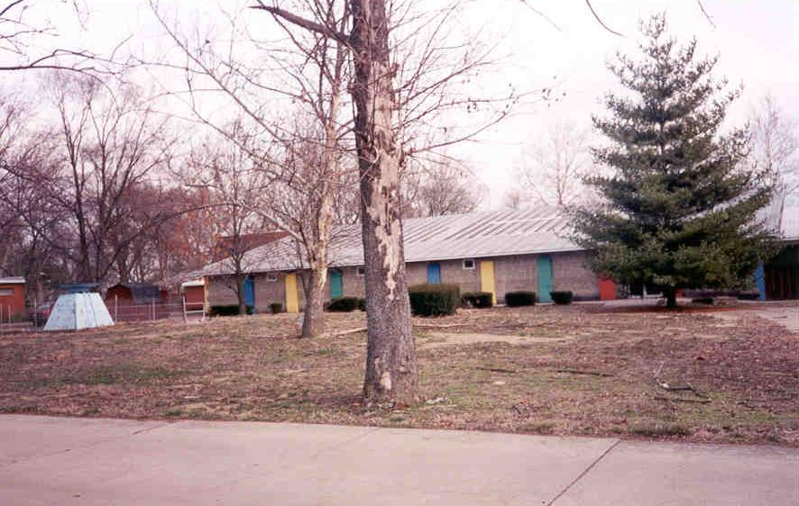
A dried-up fountain and an old concession stand
The coolest thing we found at the Fantasy Farm, though, was the "Tom Sawyer's Caverns" ride under the old haunted house. It wound through a network of stone-walled tunnels near the gate. I stumbled on this by accident when going down into the bushes to answer the call of nature, and we went in with no light other than Rookie's meager camera flash.
As I said, the Fantasy Farm is neighbors with Americana. From the back of the park you can look across a go-cart track and see the place. Click below to explore Americana.
For a very nice look at the Fantasy Farm, check out this page.

 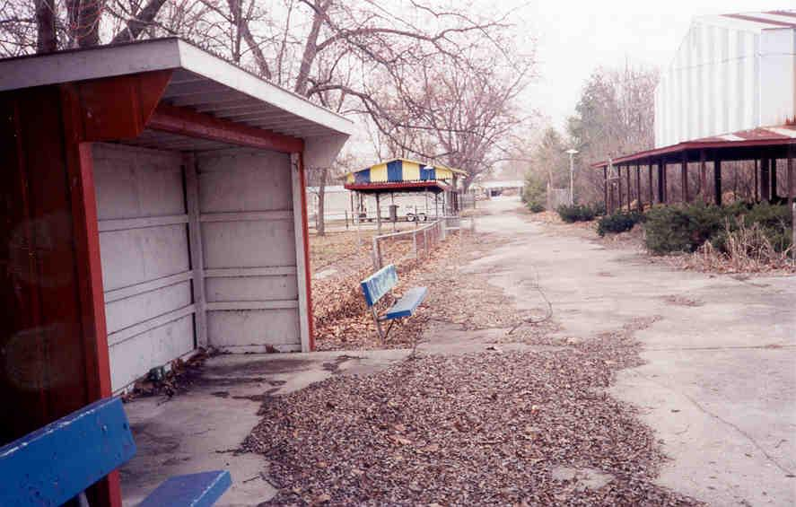
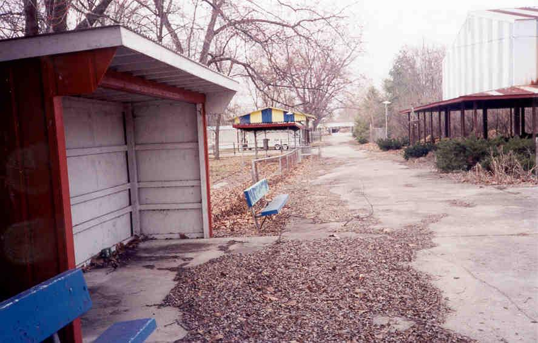

 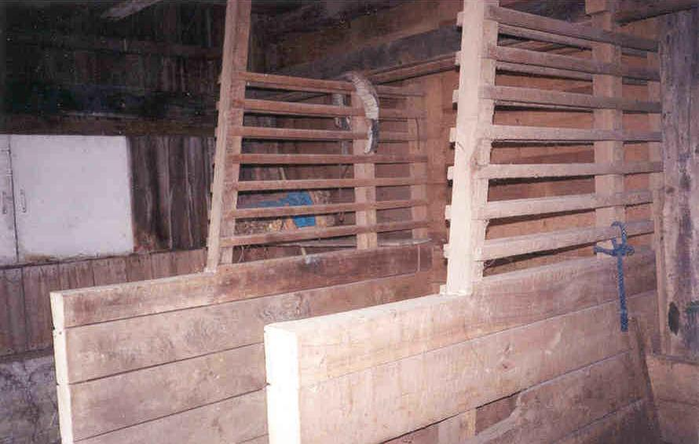
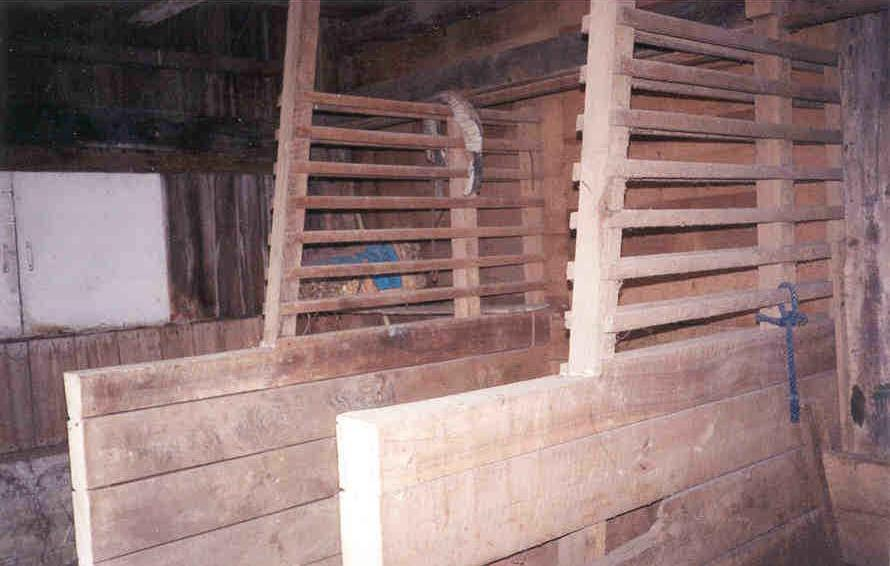
 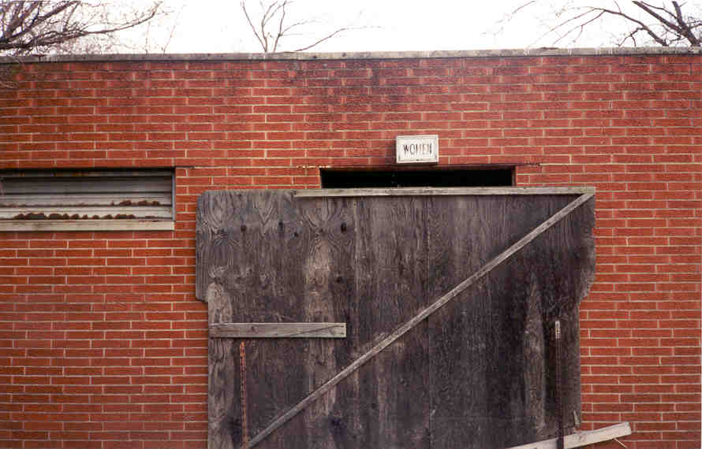
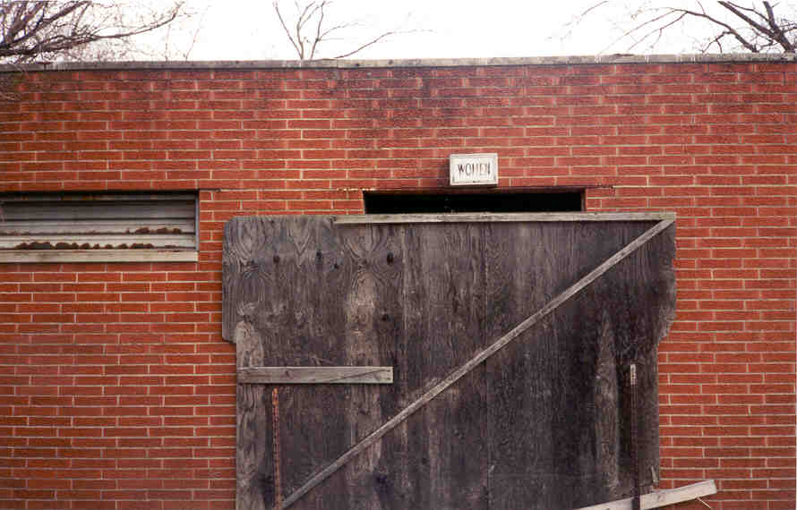

 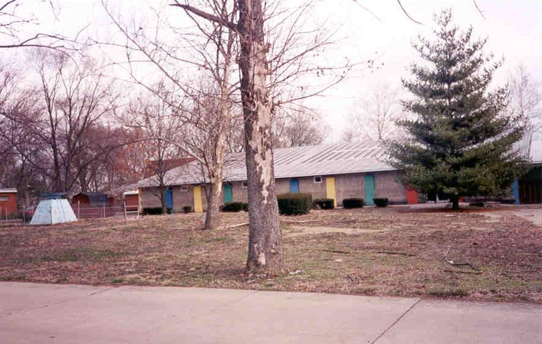
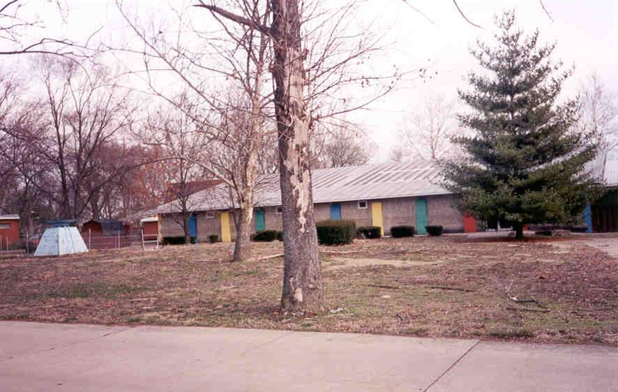
 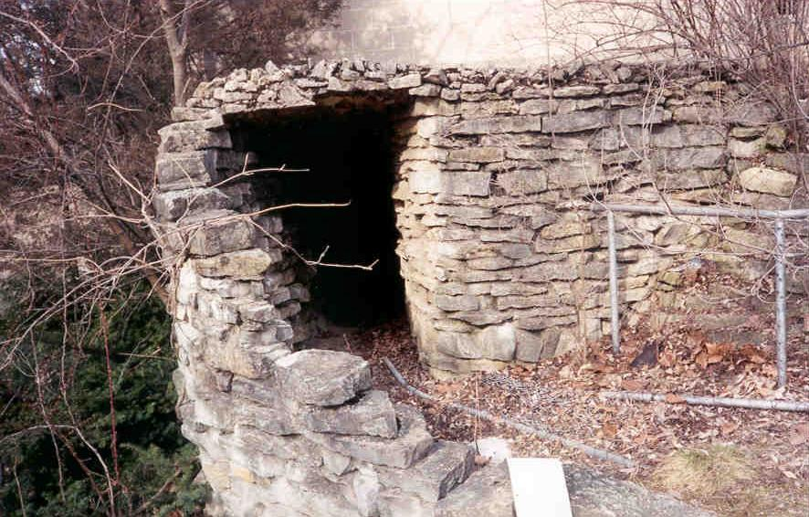
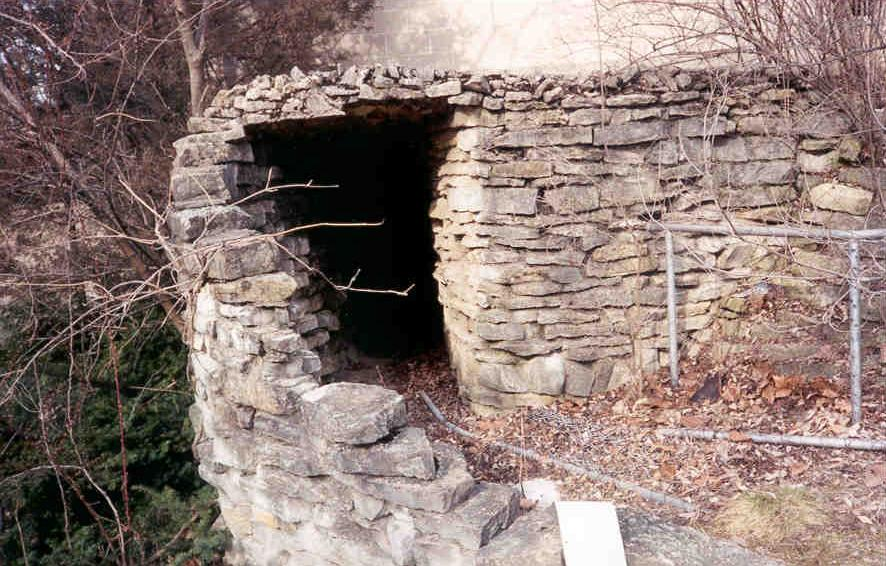